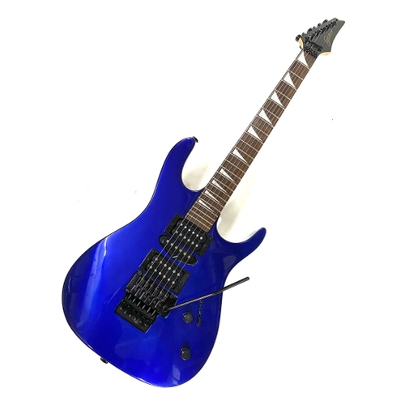
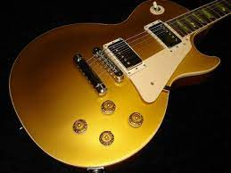
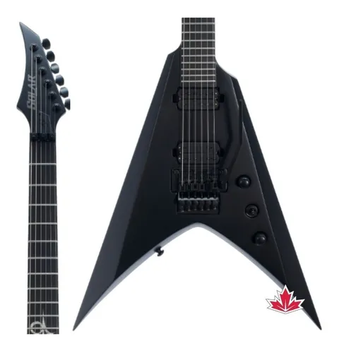
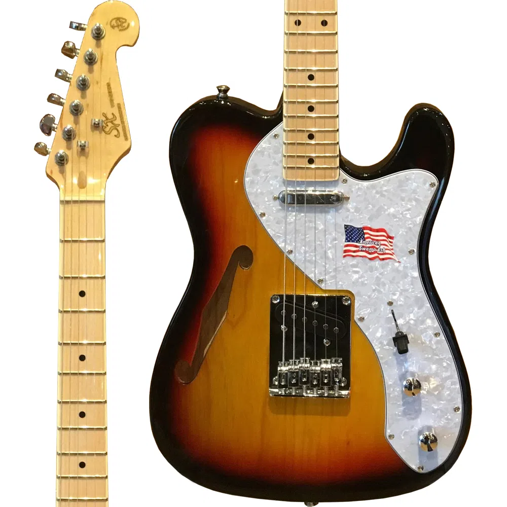
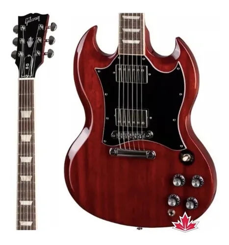
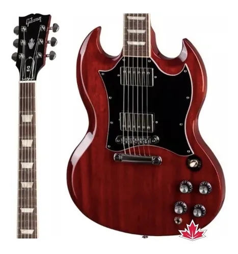
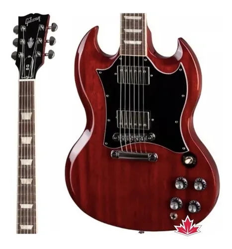

tipos de guitarra
- stratocaster
- telecaster
- les paul
- super strtato
- flyng v
- jaguar
- sg    
 
guitarra dos meus sonhos fender jaguar guitarra que kurt cobain usou no seu clip "smells like teen spirint" foi leiloada por 4,5 milhoes de dolares sonho de qualquer guitarrista .
minha missão é: "tocar igual ao lendario jimi hendrix".
bandas de rock black sabbath, nirvana, guns n roses, metalica, iron maiden, cannibal corpse, korn, slipknot.
